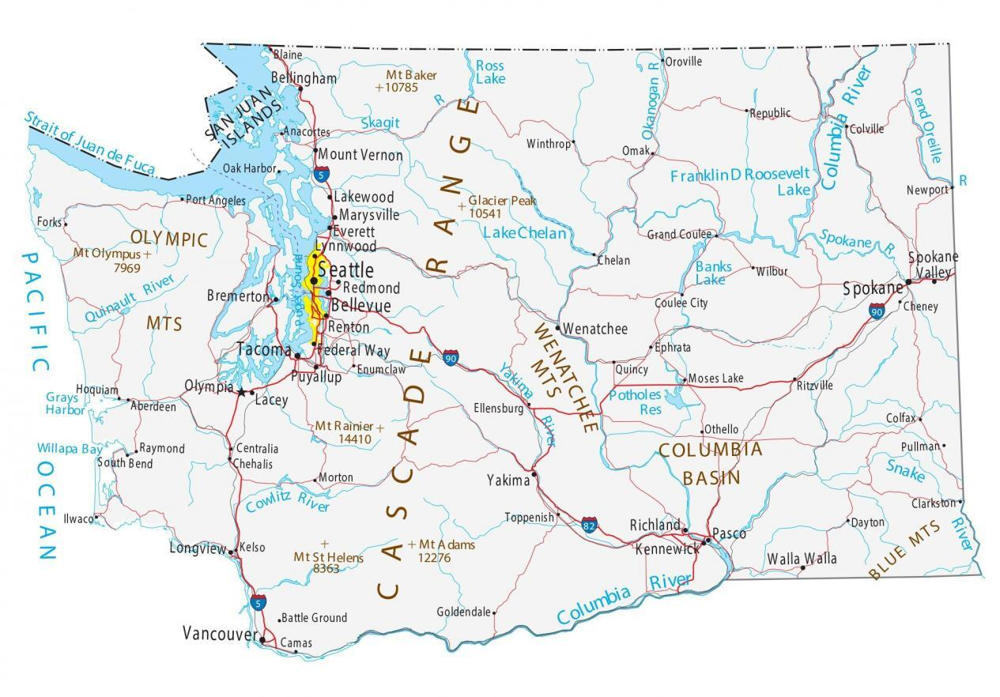

Discovering Yakima
Yakima, situated in the heart of Washington, is known for its fertile valleys, wineries, and vibrant cultural scene. Explore the Yakima Valley Museum, enjoy local produce at farmers' markets, and experience the blend of tradition and agriculture that defines Yakima. The city embraces its agricultural roots while fostering a diverse and growing community.
Facts about Yakima
-
City's Population:
As of the last estimate in 2022, Yakima's population is approximately 93,000.
-
City Incorporation Date:
Yakima became a city on January 27, 1886.
-
Region:
Yakima is centrally located in the Yakima Valley, surrounded by picturesque landscapes and agricultural fields.
-
Cityscape:
Yakima offers a mix of urban and rural charm, with historic buildings and modern amenities. The city's proximity to vineyards and orchards adds to its unique character.
-
Average Income Level:
The average income level of Olympia is $43,010 compared to the rest of the state, which is $72,366.
-
Cultural Scene:
Immerse yourself in Yakima's cultural diversity, from local festivals to art galleries. Visit landmarks like the Capitol Theatre and the Yakima Valley Museum to experience the rich cultural heritage of the region.
This month's events in Yakima
| Monday | Tuesday | Wednesday | Thursday | Friday | Saturday | |
|---|---|---|---|---|---|---|
| 12/5-12/11 | Yakima Valley Wine Tasting | Local Artist Showcase | Community Potluck Dinner | Farmers' Market | First Friday Art Crawl | Winter Wonderland Festival |
| 12/12-12/18 | Holiday Lights Tour | Yakima Symphony Orchestra Performance | Winter Wine Festival | City History Exhibition | Employee Appreciation Day (Half Day) | Craft Fair and Artisan Market |
| 12/19-12/25 | Christmas Parade | Public Art Installation Unveiling | Winter Solstice Celebration | City Hall Open House | Holiday Jazz Concert | Staff Retreat (Full Day) |
| 12/26-12/31 | New Year's Eve Celebration | Yakima Film Festival | Leadership in Agriculture Seminar | Community Wellness Day | Employee Wellness Day | New Year's Eve Fireworks |
| 01/01-01/07 | New Year's Day (Office Closed) | Winter Harvest Festival | Employee Development Workshop | Yakima Valley Brewery Tour | First Thursday Art Night | Weekend Retreat |